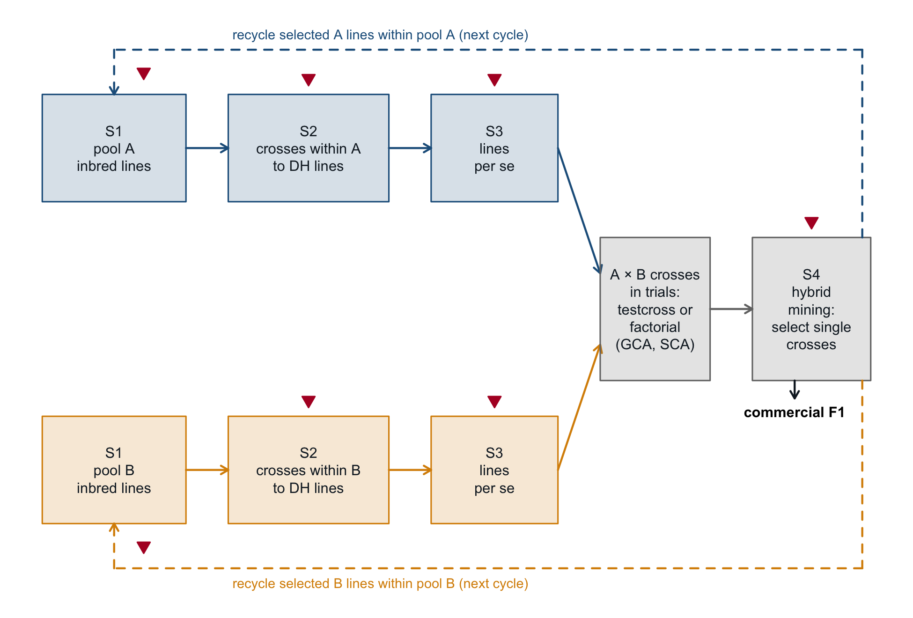

1The hybrid breeding programme, and the population genetics it rests on
The preface states the optimisation problem. This chapter states what that problem is a part of. Its first half follows a hybrid programme through one cycle, names the four stages that Chapter 13 measures, and marks where in that cycle diversity can be lost. Its second half gives the population genetics the later chapters assume: allele frequency, Hardy-Weinberg proportions, gene diversity, identity by descent and by state, coancestry, the inbreeding coefficient and its namesakes, drift and effective size. Each is defined here, with the identity that later chapters lean on checked numerically. Derivations stay in the chapters that use them; this one points to them.
Section 10.1 declares assumptions A1–A8 for the numbers of that chapter. This chapter describes the kind of programme they refer to, and its examples use them, restated here because they are used before that section is reached:
the species is allogamous and the product an F1: two heterotic pools, A and B, whose single crosses are the product (A1);
parent lines fully inbred, by doubled-haploid (DH) induction or by selfing to fixation (A2);
germplasm recycled only within its own pool, only information crossing the pool boundary (A3);
cycles discrete, with constant pool sizes and no overlap of generations (A4);
markers neutral and biallelic, coded \(0/0.5/1\) as the within-individual frequency \(x_{ik}\) of the reference allele, as in Equation 2.2, and in linkage equilibrium within pool because simulate_lines() draws each locus independently (A5);
the frequency base frozen at the founding cycle (A6);
no dominance in any diversity metric (A7);
the teaching scale of _common.R (A8).
Neutrality holds in the diversity examples of this chapter because nothing in them selects on a trait. It is not a property of the book’s data in general. The combining-ability example of Section 1.1 gives every marker a dominance effect, so there the marker set is the set of quantitative trait loci; and the traits of simulate_data() have effects at every marker (Chapter 6), so wherever the book selects on that index, the markers its metrics read are themselves under selection.
The live examples on the book’s simulated lines and hybrids run at the teaching scale: 25 + 25 lines, 2000 markers, every A \(\times\) B single cross formed, pool frequencies drawn by the Balding-Nichols model of Chapter 6. The two Monte Carlo checks of Equation 1.3 and Equation 1.4 do not use these data and state their own parameters.
Show code
ctx <-simulate_data(book_cfg) # hybrids: X, f; lines: fLGL <-simulate_lines(book_cfg) /2# the same lines, coded 0/1pool <- ctx[["pool"]]fL <- ctx[["fL"]]# exact identities: the tolerance is the rounding of a sum over m markerstol_id <-2* ctx[["m"]] * .Machine$double.epsstopifnot(isTRUE(all.equal(fL, molecular_coancestry(GL), tolerance = tol_id)))# verification echo: the text reports these values; not a results tablec(lines_A =sum(pool =="A"), lines_B =sum(pool =="B"),hybrids = ctx[["N"]], markers = ctx[["m"]])#> lines_A lines_B hybrids markers #> 25 25 625 2000
1.1 The programme, end to end
Heterotic pools. A hybrid programme maintains two (sometimes more) sets of lines, the heterotic pools or groups, and makes its product by crossing a line of one pool with a line of the other. Lines are not crossed within a pool to make a product; within a pool they are crossed only to make new lines. The pools are kept apart because the value of an A \(\times\) B single cross depends on the complementarity of the two parents. Allele-frequency divergence between the pools adds to that value only where it falls on loci with dominance: under neutral divergence expected heterosis does not move (Chapter 5). How lines come to be assigned to a pool is itself an unsettled empirical question (Chapter 21); this book takes the assignment as given.
Inbred parent lines. The parents are homozygous lines. Selfing from a non-inbred plant (\(F^{(0)} = 0\)) raises the inbreeding coefficient after \(t\) generations of selfing as \(1 - F^{(t)} = (1/2)^t\), because each generation of selfing halves the probability that the two alleles at a locus are not identical by descent (Falconer and Mackay 1996, ch. 5); after six generations \(F^{(6)} = 0.9844\). The superscript counts generations of the mating system under discussion, here selfings, not filial generations: the filial generation F\(_{t+1}\) has inbreeding coefficient \(F^{(t)}\). A doubled haploid reaches \(F = 1\) in one step: it is a single gamete with its chromosome set doubled. Either route delivers a line with no heterozygous locus, and that fact carries much of the algebra of the book.
The product: the F1 single cross. Because both parents are homozygous, the genotype of the F1 between lines \(a\) and \(b\) is determined without sampling: at each locus it carries one allele from each parent, and it is heterozygous exactly where the two parents differ (Equation 2.1). Seed of the same single cross produced in two seasons is genetically the same hybrid. The commercial product carries heterozygosity; neither parent does.
Testing in cross, and combining ability. A line is not worth what it yields on its own; it is worth what its hybrids yield. Lines are therefore evaluated in cross with lines of the opposite pool – either against one or a few fixed testers (a testcross, Section 18.3) or in a sparse factorial among the candidates of both pools (Section 18.4). The cross means are read through the partition into general and specific combining ability defined by Sprague and Tatum (1942), written as a linear model for a factorial between two sets of lines (the North Carolina Design II of Comstock and Robinson (1948); the notation \(g\), \(s\) is that of Griffing (1956)),
with \(\bar y_{ij}\) the mean of hybrid \(i \times j\) over its plots, \(\mu\) the mean of the reference set of crosses, \(g^A_i\) the general combining ability (GCA) of pool-A line \(i\) (what it carries into every cross it enters), \(g^B_j\) that of pool-B line \(j\), \(s_{ij}\) the specific combining ability (SCA) of the pair (what depends on which two lines met), and \(\bar e_{ij}\) the plot error of the mean. Equation 1.1 is the model of Section 18.2, where its estimation is treated.
Both effects are defined relative to a reference set of crosses, and so against a tester pool. Section 18.2 writes the GCA of a pool-A line as \(\sum_k [a_k + d_k(1 - 2p_{Bk})]\,\delta u_{ik}\), and Section 5.11 derives its dominance part \(\sum_k d_k(1 - 2p_{Bk})\,\delta u_{ik}\): an average effect of substitution evaluated at pool B’s frequencies \(p_{Bk}\), with \(a_k\) and \(d_k\) the additive effect and the dominance effect at locus \(k\) and \(\delta u_{ik}\) line \(i\)’s centred 0/1 genotype. Without dominance (\(d_k \equiv 0\)) the GCA of a line is the same against every tester set; with dominance it moves with the testers’ frequencies. The chunk takes the dominance part alone, on the book data with every marker treated as a dominance locus and a gamma-distributed \(d_k\) (the draw Chapter 5 uses; an illustrative assumption, not an estimate), and computes the GCA of the same 25 pool-A lines against two disjoint halves of pool B.
Show code
U <- GL[pool =="A", , drop =FALSE]; V <- GL[pool =="B", , drop =FALSE]set.seed(4)d <-rgamma(ncol(GL), 2, 4) # dominance effects, d_k > 0half <-seq_len(nrow(V)) <=nrow(V) /2g1 <-heterosis_gca_sca(U, V[half, , drop =FALSE], d)[["gca_A"]]g2 <-heterosis_gca_sca(U, V[!half, , drop =FALSE], d)[["gca_A"]]# GCA is the row effect of the complete factorial against those testersV1 <- V[half, , drop =FALSE]H1 <-outer(drop(U %*% d), drop(V1 %*% d), "+") -2* U %*% (d *t(V1))gca_err <-max(abs(g1 - (rowMeans(H1) -mean(H1))))stopifnot(gca_err <1e-10)gca_cor <-cor(g1, g2)top5_shr <-length(intersect(order(-g1)[seq_len(5)], order(-g2)[seq_len(5)]))# verification echo: the text reports these values; not a results tablec(correlation = gca_cor, top5_shared = top5_shr)#> correlation top5_shared #> 0.8587374 3.0000000
Result. Against the first half of pool B (12 lines; the second has 13) the GCA equals the row effect of the factorial to within \(3.7 \times 10^{-13}\); the correlation between the dominance parts of the GCA computed against the two halves is 0.859, and 3 of the five best lines are the same. Interpretation. Under dominance, the same line, with the same genotype, has a different general combining ability against a different tester set: GCA is then a property of a line against a tester pool, not of the line alone; with \(d_k \equiv 0\) it would not depend on the testers. The size of the disagreement here belongs to the dominance part alone (\(a_k \equiv 0\)), one dominance draw, one seed and testers of 12 and 13 lines, and is not a general estimate. The additive part \(\sum_k a_k\,\delta u_{ik}\) is the same against both halves. With additive effects independent of the dominance effects, and the two dominance parts of similar variance (s.d. 5.90 and 5.84 here), it tends over draws of the \(a_k\) to raise the correlation. On a single draw it can lower it, because on 25 lines the realised additive part is not orthogonal to the difference between the two dominance parts, so the correlation shown is not a lower bound for the case with additive effects.
The four stages.Chapter 13 divides a cycle of the programme into four stages and measures diversity at each. The names, listed in Table 1.1, are the ones Chapter 13 uses; the chapters of the last column treat the stages, and not all of them use the names. They are not the package’s stage 1 and stage 2 (Chapter 6), which are steps of the data flow, nor the trial stages of Chapter 19, which are steps of field testing.
Table 1.1: The four stages of a cycle of a hybrid programme, what is selected at each, and the chapters of this book that treat it.
The selection problem stated in the preface – choose \(n_{sel}\) of \(N\) candidate hybrids under a diversity budget \(\alpha_{\max}\) – is S4. Testing in cross (Equation 1.1) and genomic prediction (Chapter 14) supply the predicted values that S4 selects on; which crosses are grown and where is the subject of the Mating and testing design part.
The four stages do not exhaust the cycle. S3 comes before testing in cross: it reduces the DH lines to those that enter crosses, on what a line shows per se, and the value of a line that survives it is then read in cross (Equation 1.1). Testing in cross, between S3 and S4, and recycling, after S4, are not stages.
Recycling. The lines that prove themselves in cross are intercrossed within their own pool to start the next cycle, and new DH lines are derived from those within-pool crosses. Selection information crosses the pool boundary; germplasm does not. A DH derived from an A \(\times\) B hybrid would carry both pools’ alleles and erode their divergence, which pays in heterosis where it falls on loci with dominance (assumption A3 of Section 10.1; Chapter 5).
On inbred lines this is the scheme Kadoumi et al. (2025) describe as tester-based, or modified, reciprocal recurrent selection: each group of inbreds is the source material for selection within it and provides testers for hybrid selection in the other. They trace it to Hull (1945) and cite Comstock et al. (1949) for the heterotic structure it builds.
Figure 1.1 draws one cycle. In the book’s model of the step from S4 to the next cycle, the parents of the selected hybrids found the next pools, each in proportion to its use, so the choice made at S4 under \(\alpha_{\max}\) acts on within-pool diversity in the next cycle. run_cycles() in Chapter 23 implements that loop in reduced form: recycling is driven by line usage in the selected hybrids (line_weights(), next_pool()), but there are no trials and no S3, and the index is known without error (its assumptions C7 and C8).
Show code
op <-par(mar =c(0, 0, 0, 0)); plot.new(); plot.window(c(0, 100), c(0, 64))box_ <-function(x, y, w, h, lab, col) {rect(x, y, x + w, y + h, col =adjustcolor(col, 0.18), border = col)text(x + w /2, y + h /2, lab, cex =0.62, col = book_pal[["ink"]])}arr <-function(x0, y0, x1, y1, ...) arrows(x0, y0, x1, y1, length =0.06, lwd =1.4, ...)loss <-function(x, y) points(x, y, pch =25, cex =0.9,bg = book_pal[["loss"]], col = book_pal[["loss"]])for (g inc("A", "B")) { y <-if (g =="A") 44else8 cl <- book_pal[[g]]box_(1, y, 17, 12, paste0("S1\npool ", g, "\ninbred lines"), cl)box_(23, y, 19, 12, paste0("S2\ncrosses within ", g, "\nto DH lines"), cl)box_(47, y, 15, 12, "S3\nlines\nper se", cl)arr(18, y +6, 23, y +6, col = cl); arr(42, y +6, 47, y +6, col = cl)arr(62, y +6, 67, if (g =="A") 36else28, col = cl)loss(32.5, y +13.8); loss(54.5, y +13.8)}box_(67, 24, 13, 16, "A \u00d7 B crosses\nin trials:\ntestcross or\nfactorial\n(GCA, SCA)", book_pal[["mid"]])box_(85, 24, 14, 16, "S4\nhybrid\nmining:\nselect single\ncrosses", book_pal[["mid"]])arr(80, 32, 85, 32, col = book_pal[["mid"]]); loss(92, 41.8)arr(90, 24, 90, 22, col = book_pal[["ink"]])text(90, 20.5, "commercial F1", cex =0.62, font =2)# recycling leaves S4, within pool only# dashed shafts; the heads are drawn solid, since arrows() dashes the head toosegments(c(98, 98, 9.5), c(40, 61, 61), c(98, 9.5, 9.5), c(61, 61, 57.2),lty =2, lwd =1.4, col = book_pal[["A"]])arr(9.5, 57.2, 9.5, 56, col = book_pal[["A"]])segments(c(98, 98, 9.5), c(24, 3, 3), c(98, 9.5, 9.5), c(3, 3, 6.8),lty =2, lwd =1.4, col = book_pal[["B"]])arr(9.5, 6.8, 9.5, 8, col = book_pal[["B"]])text(41, 62.6, "recycle selected A lines within pool A (next cycle)", cex =0.58,col = book_pal[["A"]])text(41, 1.2, "recycle selected B lines within pool B (next cycle)", cex =0.58,col = book_pal[["B"]])loss(13, 58.5); loss(13, 5.5)par(op)

Figure 1.1: One cycle of a two-pool hybrid programme. Blue: pool A; amber: pool B; grey: the stages that act on A \(\times\) B crosses. S1–S4 are the stages of Chapter 13. Solid arrows carry lines forward within a cycle; dashed arrows leave S4 and return the parent lines of the selected hybrids to their own pool for the next cycle, so only selection information crosses the pool boundary. Red triangles mark the steps that sample or select, at which diversity can be lost: within a pool at S2, S3 and recycling; at S4 in the selected hybrid set and, through line usage, in the next cycle’s pools. A schematic, not a simulation output.
Where diversity can be lost. At every step marked in Figure 1.1 the set passed on is a part of the set received or descends from it, so without mutation the number of alleles can stay the same or fall, never rise. Gene diversity behaves differently. The worked case is S4, where the set received is the \(N\) candidate hybrids, not a heterotic pool, and the set passed on is a subset of \(n_{sel}\) of them. A subset drawn at random has an expected group coancestry \(\theta_S\) (the mean of all pairwise coancestries in the set, diagonal included; defined in Section 1.2) larger than that of the candidate set by \((1/n_{sel} - 1/N)(\bar f_d - \bar f_o)\), with \(\bar f_d\) the candidate set’s mean self-coancestry and \(\bar f_o\) its mean coancestry between distinct members, so its expected gene diversity \(GD_S = 1 - \theta_S\) (Equation 1.2) is lower by the same amount (Section 11.9). A subset selected on some criterion carries no such guarantee, and one selected for diversity can exceed the candidate set. The chunk measures both on the book’s hybrids, with the diversity-only greedy sel_greedy(w = 0) as the selected subset.
Result. The 625 hybrids have \(GD\) = 0.3281; 200 random subsets of 20 average 0.3209 (s.e. 0.00013, expected 0.3210), the largest of them 0.3251; the 20 hybrids chosen for diversity alone have 0.3296, above the full candidate set. Interpretation. At S4 a loss of gene diversity in the merged hybrid set is guaranteed only in expectation and only for sampling; selection can move a subset either way, and the comparison that isolates what selection did is against random subsets of the same size, not against the candidate set. That is why the diversity loss \(\alpha = (GD_{\text{ref}} - GD_S)/GD_{\text{ref}}\), the quantity the budget \(\alpha_{\max}\) bounds, is measured against \(GD_{\text{ref}}\), the mean gene diversity of random subsets of the same size (Section 11.9). The subset algebra holds for any finite set, so also for the lines of one pool at S3, but not at S2, where each line is a new gamete; within-pool diversity is not measured in this chunk. The numbers belong to one pair of pools, one subset size and one seed.
At S2 a few crosses are chosen among all within-pool pairs and each DH line is one gamete of its cross; at S3 and S4 lines and hybrids are truncated on merit; at recycling the next cycle is founded by the few lines that won in cross. In the end-to-end simulation of Chapter 13, whose ledger covers S2, S3 and S4 and not recycling, where the largest share of the loss falls depends on how the crosses are chosen at S2: under merit-only cross selection it falls at S2, and with a diversity term added S2 and S4 carry shares that its founder pools do not separate. That result is the simulation’s, at its scale, read from a cached table, and is reported there with its conditions.
Between the pools the movement under drift is the opposite. Under drift alone in two closed pools of equal weight, between-pool coancestry is unchanged in expectation while within-pool coancestry rises, so between-pool divergence rises while within-pool diversity falls (Chapter 3). That argument does not cover selection, and this chapter gives none for a selection target common to both pools, which is what run_cycles() applies. There the rise in divergence is a simulation result: the between-pool term of gene diversity (\(GD_{BS}\), defined in Section 1.2) rises in every run of Chapter 23, with drift and selection acting together, so neither is isolated.
Genotyped germplasm gives a less simple picture. Over forty years of a private European dent maize programme, Kadoumi et al. (2025) report \(F_{ST}\) between Stiff Stalk (SS) and Non-Stiff Stalk (NSS) lines rising from 0.178 to 0.223, while the mean between-group Hamming distance fell slightly, from 0.430 to 0.420 (\(-2.33\)%). Between inbred parents that distance is the heterozygosity of their hybrid on the markers used, the \(H_o\) of Section 1.2, so the quantity nearest the product did not rise with \(F_{ST}\). The within-group decline is concentrated in NSS (\(H_e\) from 0.371 to 0.279, with SS stable). The authors attribute the main germplasm-wide loss to the merging and homogenisation of the Iodent and Lancaster groups into NSS, so NSS was not a closed pool over that period, and say they can only speculate that selection caused the rise in divergence. Heerwaarden et al. (2012) report increasing separation of breeding pools across the history of North American maize lines, and attribute little of the genome-wide pattern to selection. Neither study establishes drift in closed pools, alone or with selection, as the cause of the divergence it reports. Chapter 21 reads Kadoumi et al. (2025) within its corpus, which begins in 2017 and so excludes Heerwaarden et al. (2012). A single pool-wide statistic sees the sum of the within-pool and between-pool terms, which is why the book partitions it.
1.2 The population genetics the book assumes
Shared symbols follow Appendix A; those local to this chapter are defined where they appear. \(p_k\) is the frequency of the reference allele at marker \(k\) in a stated set of individuals, \(q_k = 1 - p_k\); \(p_{Ak}\), \(p_{Bk}\) are the frequencies among the lines of pool A and pool B, \(\bar p_k\) a group mean, and \(p_{0,k}\) the frozen base frequency of the founding candidate set.
1.2.1 Allele frequency and Hardy-Weinberg proportions
For a set of \(n\) individuals with within-individual frequencies \(x_{ik}\), the allele frequency at marker \(k\) is \(\bar p_k = n^{-1}\sum_i x_{ik}\): every individual contributes equally, and a homozygous line contributes one allele identity counted twice. In a large population with random union of gametes and no selection, migration or mutation, one generation of random mating sets the genotype frequencies to \(p^2\), \(2pq\) and \(q^2\), the Hardy-Weinberg proportions (Falconer and Mackay 1996, ch. 1). Neither of the two sets a hybrid programme measures is in those proportions. A pool of inbred lines has genotype frequencies \(p\), \(0\), \(q\); a set of A \(\times\) B single crosses has every allele from pool A paired with one from pool B, never with another from A. Hardy-Weinberg is used in this book as a reference, the heterozygosity a set would have under random union of its gametes, not as a description of any set in it.
1.2.2 Gene diversity, expected and observed heterozygosity
The expected heterozygosity of a set is that Hardy-Weinberg reference, averaged over loci, and with \(\theta_S\) the group coancestry of set \(S\) (the mean of the coancestry submatrix, diagonal included; defined in Section 1.2.3) it is exactly gene diversity:
\(m\) is the number of markers and \(\bar p_k\) the frequency in \(S\). \(H_e\) is Nei’s gene diversity (Nei 1973) in its plug-in form, without the small-sample correction, on the base of the set’s own frequencies; Section 11.2 derives the identity. For a set spanning the two pools, \(GD_S\) is the total of the partition of Caballero and Toro (2002) and is written \(GD_T\): \(GD_T = GD_{WI} + GD_{BI} + GD_{BS}\) (Equation 3.9), the three terms being diversity within individuals, between individuals within a pool, and between pools. For a set of hybrids the partition is taken over their parent lines, each weighted by its use, so with inbred parents \(GD_{WI} = 0\). Observed heterozygosity \(H_o\) is the fraction of heterozygous loci actually present, averaged over the individuals of the set. The two coincide in expectation only under Hardy-Weinberg proportions, and the hybrid programme violates them in both directions:
Show code
pA <-colMeans(GL[pool =="A", , drop =FALSE])all_h <-seq_len(ctx[["N"]])gp <-gd_partition(all_h, ctx)het <-c(Ho_lines =mean(GL ==0.5),He_pool_A =mean(2* pA * (1- pA)),Ho_hybrid =mean(ctx[["X"]] ==0.5),He_hybrid =he_nei(all_h, ctx),GD_hybrid =gene_diversity(all_h, ctx))stopifnot(het[["Ho_lines"]] ==0, # coding guard: GL is 0/1 by construction (A2)isTRUE(all.equal(het[["He_pool_A"]],1-mean(fL[pool =="A", pool =="A", drop =FALSE]),tolerance = tol_id)),isTRUE(all.equal(het[["GD_hybrid"]], het[["He_hybrid"]], tolerance = tol_id)),isTRUE(all.equal(gene_diversity(S_div, ctx), he_nei(S_div, ctx), # a proper subsettolerance = tol_id)),isTRUE(all.equal(het[["He_hybrid"]], gp[["GD_T"]], tolerance = tol_id)),isTRUE(all.equal(het[["Ho_hybrid"]], gp[["GD_T"]] + gp[["GD_BS"]],tolerance = tol_id)),abs(gp[["GD_WI"]]) < tol_id) # inbred parents# verification echo: the text reports these values; not a results tablefmt(het, 4)#> Ho_lines He_pool_A Ho_hybrid He_hybrid GD_hybrid #> 0.0000 0.2953 0.3617 0.3281 0.3281
Result. The lines are heterozygous at no locus, by construction (A2: they are coded 0/1; the assertion guards the coding, it measures nothing), while pool A’s expected heterozygosity is 0.295, equal to one minus pool A’s group coancestry. Over all 625 hybrids, \(1 - \theta_S\) equals \(H_e\) (Equation 1.2), and the observed heterozygosity 0.362 exceeds the expected 0.328 by exactly \(GD_{BS}\) = 0.0336, the between-pool term of the partition of Chapter 3. Interpretation. In inbred lines observed heterozygosity is a purity check and carries no information on diversity; in the hybrids it exceeds the Hardy-Weinberg reference by the divergence between the pools. That excess is the identity \(H_o = GD_T + GD_{BS}\), derived as Equation 5.7 in Section 5.5 (Section 5.4 gives the per-locus expectation, Equation 5.5), which holds for the complete factorial; the decomposition is exact, the magnitudes are those of one simulated pool pair.
1.2.3 Identity by descent, identity in state, coancestry
Two alleles are identical by descent (IBD) if both are copies of one allele in a defined base population; they are identical in state (IBS) if they are the same allele, whatever their origin. IBD is defined only relative to a base: change the base and the probabilities change. Markers observe state, not descent.
The coancestry of individuals \(i\) and \(j\) is the probability that an allele drawn at random from \(i\) and one drawn at random from \(j\), at the same locus, are IBD (Malécot 1948). Computed from a pedigree it is \(A_{ij}/2\), half the pedigree relationship, relative to the pedigree’s base; the inbreeding coefficient of a progeny of \(i \times j\) equals the coancestry of its parents (Falconer and Mackay 1996, ch. 5). Replacing IBD by IBS gives the molecular coancestry \(f_{ij}\) of Equation 2.5, whose matrix \(\mathbf{f}\) the coancestry-based metrics of the book are computed on (Caballero and Toro 2002); frequency-based metrics such as \(F_{drift}\) are not. The two are related. Let the alleles that are not IBD be independent draws from the frequencies \(p_{b,k}\), \(q_{b,k} = 1 - p_{b,k}\) of the pedigree’s base (no mutation, neutral loci), which need not be the frozen \(p_{0,k}\). Then two alleles are IBS either because they are IBD or, failing that, by chance, and in expectation over Mendelian sampling and loci
the form Eding and Meuwissen (2001) use to estimate kinship from marker similarity. The chunk checks Equation 1.3 on full sibs (\(A_{ij}/2 = 1/4\)) and on unrelated individuals (\(A_{ij} = 0\)): each replicate draws two parents in Hardy-Weinberg proportions from a base with uniform \(p_{b,k}\), breeds two full sibs from them, and uses the two parents themselves as the unrelated pair, at unlinked loci.
Result. Over 200 replicates, 2000 loci and \(p_{b,k} \sim U(0.05, 0.95)\), the mean molecular coancestry of full sibs is 0.7264 (s.e. 0.00039) against 0.7264 from Equation 1.3, and that of unrelated pairs 0.6351 against 0.6352. Interpretation. Rearranged, Equation 1.3 says that molecular coancestry is the floor \(m^{-1}\sum_k (p_{b,k}^2 + q_{b,k}^2)\) set by the base frequencies plus the pedigree coancestry \(A_{ij}/2\) scaled by one minus that floor, not plus the pedigree coancestry itself. Full sibs are therefore expected to exceed unrelated pairs by one quarter of one minus the floor, 0.0912, not by \(1/4\), and unrelated individuals do not have \(f_{ij} = 0\) but \(f_{ij}\) near the floor. That is why \(\mathbf{f}\) is read as a comparison between sets measured on the same markers, and why it is never centred to make that floor vanish (Section 2.2, Section 2.3). The agreement is a Monte Carlo one, under unlinked loci and a known base, from one seed.
The diagonal of \(\mathbf{f}\) is the self-coancestry\(s_i = f_{ii}\), the probability that two alleles drawn with replacement from \(i\) are identical: \(s_i = (1 + F_i)/2\) (\(F_i\) the inbreeding coefficient of Section 1.2.4), which is 1 for an inbred line and 0.5 for an individual heterozygous at every marker (Section 2.3). Group coancestry\(\theta_S\) is the mean of all \(f_{ij}\) over pairs in \(S\), the diagonal included (Cockerham 1967); including the diagonal is what makes Equation 1.2 exact.
1.2.4 The inbreeding coefficient, and the quantities that share its letter
The inbreeding coefficient\(F_i\) of an individual is the probability that its two alleles at a locus are IBD; Wright (1922) introduced it as the correlation between uniting gametes. Its molecular counterpart in this book is the fraction of markers at which \(i\) is homozygous. For a single cross the molecular \(F_i\) is exactly the molecular coancestry of its two parent lines, \(F_{(ab)} = f^L_{ab}\), because two homozygous lines agree in state exactly where their F1 is homozygous:
Show code
F_hyb <-rowMeans(ctx[["X"]] !=0.5)ped <- ctx[["ped"]]lw <-line_weights(S_div, ctx)w <- (lw[["A"]] + lw[["B"]]) /2# usage of each line in S_divstopifnot(isTRUE(all.equal(F_hyb, fL[cbind(ped[["a"]], ped[["b"]])], tolerance = tol_id)),# s_i = (1 + F_i) / 2isTRUE(all.equal(diag(ctx[["f"]]), (1+ F_hyb) /2, tolerance = tol_id)),# theta_S as a quadratic form in line usageisTRUE(all.equal(mean(ctx[["f"]][S_div, S_div, drop =FALSE]),drop(crossprod(w, fL %*% w)), tolerance = tol_id)))# verification echo: the text reports these values; not a results tablec(max_abs_diff =max(abs(F_hyb - fL[cbind(ped[["a"]], ped[["b"]])])))#> max_abs_diff #> 0
With inbred parents, individual \(F\) carries no management information: it is 1 for every line by construction (A2 of Section 10.1), and for a hybrid it is a property of the pair of parents, already in \(\mathbf{f}^L\). Other quantities share the letter and are not the same thing:
\(F_{drift}\) (Chapter 10) is a property of a set against the frozen base: the standardised squared change of allele frequencies from \(p_{0,k}\), averaged over markers (Meuwissen et al. 2020). It is never negative. \(F_{hom}\), its homozygosity-lens companion, is the proportional loss of expected heterozygosity against the same base and can be negative. The book computes both on the merged frequencies of a hybrid set, a notional pool, so \(F_{hom}\) reads the \(H_e\) of that pool, not the heterozygosity \(H_o\) of the product, and applies them to trajectories across cycles and to single selections alike.
\(F_{ST}\) is a property of a set of subpopulations at one time: here, as in Chapter 3, \(GD_{BS}/GD_T\), the between-pool share of gene diversity (Caballero and Toro 2002, Eq. 8). Chapter 13 names that form \(G_{ST}\), after Nei (1973), and also logs \((\theta_w - \theta_{AB})/(1 - \theta_{AB})\), with \(\theta_w\) and \(\theta_{AB}\) the mean within-pool and between-pool coancestry, under the name \(F_{ST}\). The two are different quantities, the second near twice the first, and a value of one is never read against the other.
\(F_{BN}\), fst in the code, is the Balding-Nichols parameter with which the simulations draw the two pools’ frequencies (Balding and Nichols 1995). It is a setting of the simulation, not a statistic computed on it, and Appendix A shows that the two differ.
1.2.5 Drift and effective size
In a finite population, the allele copies passed to the next generation are a sample of those present, so allele frequencies change by chance alone. This is drift. Let \(n_{gam}\) be the number of allele copies sampled per generation, drawn independently from the current frequencies, with discrete generations (A4) and no selection, mutation or migration. Then expected heterozygosity decays geometrically,
with \(H_t\) the expected heterozygosity \(m^{-1}\sum_k 2 p_k q_k\) of the set at generation \(t\), on that generation’s frequencies, \(\Delta F\) the fraction of it lost per generation, and \(N_e\) the effective size: the number of individuals of an idealised random-mating diploid population, which passes \(n_{gam} = 2N_e\) copies, that would drift at the same rate (Falconer and Mackay 1996, ch. 3–4). In a random-mating population \(\Delta F\) is the per-generation rate of inbreeding, \((\bar F^{(t)} - \bar F^{(t-1)})/(1 - \bar F^{(t-1)})\), with \(\bar F^{(t)}\) the mean inbreeding coefficient after \(t\) generations of random mating. In a pool of DH lines that ratio is \(0/0\), because \(F_i = 1\) for every line. There \(\Delta F\) is a different object, the rate of rise of the pool’s group coancestry \(\theta_t\), \((\mathbb{E}[\theta_{t+1} \mid \theta_t] - \theta_t)/(1 - \theta_t)\), which by Equation 1.2 is the same fraction of \(H_t\).
In a hybrid programme the sampling unit matters by a factor of two. A crossing block of \(n\) plants, each offspring formed from two parents drawn at random from all \(n\) with selfing allowed, passes \(2n\) allele copies per locus (\(N_e = n\)); excluding selfing slows the decay slightly, so without selfing \(N_e = n\) is an approximation. A pool re-derived as \(n\) DH lines, each one gamete of a random pair of parents, passes \(n\), one per line (\(N_e = n/2\)), because a homozygous line contributes a single allele identity (Section 10.7.4). The chunk simulates the three schemes on individuals, from founders with \(p = 0.5\) at every unlinked locus: each generation one draw of parents serves all loci, and gametes are formed from the parents’ two haplotypes. The copy counts \(2n\) and \(n\) are not supplied; they follow from who is crossed. Loci of one pedigree share its parents, so the pedigree is the replicate and standard errors are taken across pedigrees. Without selfing the two gametes of a plant come from distinct parents, so the copies are not independent draws and Equation 1.4 does not apply; the expected value there comes from the coancestry recursion in the chunk.
Show code
n_ped <-1000; m_dr <-200; t_gen <-10; n_plants <-10# n_plants even: p = 0.5 exactlygamete <-function(h1, h2) { # one per row, loci unlinked from_h2 <-runif(length(h1)) <0.5 h1[from_h2] <- h2[from_h2] h1}retained <-function(scheme, n = n_plants) { # H_t / H_0 of one pedigree dh <- scheme =="DH_pool" h1 <-matrix(if (dh) rep(0:1, length.out = n) else0L, n, m_dr) h2 <-if (dh) h1 else1L - h1 # block founders: heterozygous throughoutfor (t inseq_len(t_gen)) { a <-sample.int(n, n, replace =TRUE) b <-if (scheme =="block_selfing") sample.int(n, n, replace =TRUE)else (a +sample.int(n -1, n, replace =TRUE) -1) %% n +1# any but aif (dh) { # a new line: one gamete of the F1 a x b h1 <- h2 <-gamete(h1[a, , drop =FALSE], h1[b, , drop =FALSE]) } else { g_a <-gamete(h1[a, , drop =FALSE], h2[a, , drop =FALSE]) h2 <-gamete(h1[b, , drop =FALSE], h2[b, , drop =FALSE]) h1 <- g_a } } p <-colMeans(h1 + h2) /2mean(2* p * (1- p)) /0.5}pedigrees <-function(scheme) {vapply(seq_len(n_ped), function(r) retained(scheme), numeric(1))}# No selfing: on the scale 2 P(IBS) - 1 at p = 0.5, with c_t the coancestry of distinct# plants and within_t the correlation of the two alleles of a plant (it can be -1):# c_{t+1} = (1 - 1/n) c_t + (1 + within_t) / (2n), within_t = c_{t-1}, H_t / H_0 = 1 - c_{t+1}.# Heterozygous founders: within_0 = -1, c_0 = 0.c_t <-c(-1, 0)for (t inseq_len(t_gen +1)) { c_t <-c(c_t[2], (1-1/ n_plants) * c_t[2] + (1+ c_t[1]) / (2* n_plants))}set.seed(11); r_self <-pedigrees("block_selfing")set.seed(12); r_noself <-pedigrees("block_no_selfing")set.seed(13); r_dh <-pedigrees("DH_pool")dr_row <-function(r, expected) {c(simulated =mean(r), se =sd(r) /sqrt(n_ped), expected = expected)}dr <-rbind(block_selfing =dr_row(r_self, (1-1/ (2* n_plants))^t_gen),block_no_selfing =dr_row(r_noself, 1- c_t[2]),DH_pool =dr_row(r_dh, (1-1/ n_plants)^t_gen))stopifnot(all(abs(dr[, "simulated"] - dr[, "expected"]) <3* dr[, "se"]), dr["block_no_selfing", "simulated"] > dr["block_selfing", "simulated"])# verification echo: the text reports these values; not a results tableround(dr, 4)#> simulated se expected#> block_selfing 0.5971 0.0014 0.5987#> block_no_selfing 0.6116 0.0012 0.6131#> DH_pool 0.3458 0.0018 0.3487
Result. Over 1,000 pedigrees of 200 loci, after 10 generations, a crossing block of 10 plants retains 0.597 of its heterozygosity (expected 0.599), the same block without selfing 0.612 (expected 0.613), and a pool of 10 DH lines 0.346 (expected 0.349), each within three standard errors. Interpretation. Under neutrality the same number of parents drifts twice as fast when the next generation is a set of DH lines, and excluding selfing moves the block far less than that. Selection is outside Equation 1.4, and this chapter does not measure what it does to the rate. Chapter 23 fits rates across cycles, but every arm there is selected and its \(F_{drift}\) is taken on merged hybrid frequencies, a different level from Equation 1.4, so those rates are not read against the values here; Section 10.7.4 shows how to read \(\Delta F\) off a trajectory. \(N_e\) is a size defined by a rate, \(N_e = 1/(2\Delta F)\) in Equation 1.4, and so projects drift forward. The status number \(N_s = 1/(2\theta_S)\) of Section 11.3 is a static description of one set and does not project drift. On molecular \(\mathbf{f}\) it is not a head count either: at biallelic loci \(\theta_S = m^{-1}\sum_k(\bar p_k^2 + \bar q_k^2) \in [1/2, 1]\), so \(N_s \in [1/2, 1]\) whatever the size of the set, a monotone decreasing rescaling of \(\theta_S\).
1.3 Why the animal-breeding setting does not transfer directly
Most theory for managing diversity under selection – optimal contributions (Meuwissen 1997), the rate of inbreeding as the managed quantity, the comparison of relationship matrices (Meuwissen et al. 2020) – was developed for a randomly mating population of non-inbred individuals in which the selection candidate is an individual. A hybrid programme departs from that in three ways, each stated in the preface and each made precise elsewhere:
Parents are inbred. Within-individual diversity of a parent is zero, so \(GD_{WI} = 0\) exactly and individual \(F\) is uninformative; the managed quantity is an allele frequency in a pool (Chapter 3, and A2 of Section 10.1).
The population is permanently subdivided, and the subdivision is part of the product. Between-pool divergence \(GD_{BS}\) is to be maintained, not minimised as a symptom of drift; what it buys, and the conditions under which it buys nothing, are derived in Chapter 5.
Candidates are crosses of fixed lines. The coancestry of a set of single crosses is a quadratic form in how often each parent line is used, so the hybrid-by-hybrid matrix is never needed (Section 12.1).
Chapter 21 sets these differences against what the applied plant literature does, and Section 10.9 lists which assumptions of the simulation of Meuwissen et al. (2020) fail in a hybrid crop.
1.4 A reading map
Table 1.2 pairs each question the book answers with the part and the chapters that answer it.
Table 1.2: Reading map: the questions the book answers, the part of the book in which each is answered, and the chapters that answer it, in reading order.
Question
Part
Where
How is diversity measured, and why on \(\mathbf{f}\) and not \(\mathbf{G}\)?
What does the literature establish, what does a whole programme spend across cycles (Chapter 22 is an inbred-line scheme, outside A1; Chapter 23 the two-pool one), and how does one run end to end?
The Preface tabulates the same order, one sentence per part. Appendix A collects the book’s shared symbols and, where a function computes one, that function.
Reproduce this chapter
All the code of this chapter, in order and with the explanation kept as comments, is one script: 00-hybrid-programme.R. Download it, install hybdiv, and run it top to bottom in an empty directory; cached results are fetched on first use.
Balding, David J., and Richard A. Nichols. 1995. “A Method for Quantifying Differentiation Between Populations at Multi-Allelic Loci and Its Implications for Investigating Identity and Paternity.”Genetica 96 (1-2): 3–12. https://doi.org/10.1007/BF01441146.
Caballero, A., and M. A. Toro. 2002. “Analysis of Genetic Diversity for the Management of Conserved Subdivided Populations.”Conservation Genetics 3 (3): 289–99. https://doi.org/10.1023/A:1019956205473.
Comstock, R. E., and H. F. Robinson. 1948. “The Components of Genetic Variance in Populations of Biparental Progenies and Their Use in Estimating the Average Degree of Dominance.”Biometrics 4 (4): 254–66. https://doi.org/10.2307/3001412.
Comstock, R. E., H. F. Robinson, and P. H. Harvey. 1949. “A Breeding Procedure Designed to Make Maximum Use of Both General and Specific Combining Ability.”Agronomy Journal 41 (8): 360–67. https://doi.org/10.2134/agronj1949.00021962004100080006x.
Eding, H., and T. H. E. Meuwissen. 2001. “Marker-Based Estimates of Between and Within Population Kinships for the Conservation of Genetic Diversity.”Journal of Animal Breeding and Genetics 118 (3): 141–59. https://doi.org/10.1046/j.1439-0388.2001.00290.x.
Falconer, Douglas S., and Trudy F. C. Mackay. 1996. Introduction to Quantitative Genetics. 4th ed. Longman.
Griffing, B. 1956. “Concept of General and Specific Combining Ability in Relation to Diallel Crossing Systems.”Australian Journal of Biological Sciences 9 (4): 463–93. https://doi.org/10.1071/bi9560463.
Heerwaarden, J. van, M. B. Hufford, and J. Ross-Ibarra. 2012. “Historical Genomics of North American Maize.”Proceedings of the National Academy of Sciences of the USA 109 (31): 12420–25. https://doi.org/10.1073/pnas.1209275109.
Kadoumi, R., N. Heslot, F. Henriot, et al. 2025. “Evolution of population structure in a commercial European hybrid dent maize breeding program and consequences on genetic diversity.”Theoretical and Applied Genetics 138 (9): 233. https://doi.org/10.1007/s00122-025-05008-5.
Malécot, G. 1948. Les Mathématiques de l’hérédité. Masson et Cie.
Meuwissen, T. H. E. 1997. “Maximizing the Response of Selection with a Predefined Rate of Inbreeding.”Journal of Animal Science 75 (4): 934–40. https://doi.org/10.2527/1997.754934x.
Meuwissen, T. H. E., A. K. Sonesson, G. Gebregiwergis, and J. A. Woolliams. 2020. “Management of Genetic Diversity in the Era of Genomics.”Frontiers in Genetics 11: 880. https://doi.org/10.3389/fgene.2020.00880.
Nei, M. 1973. “Analysis of Gene Diversity in Subdivided Populations.”Proceedings of the National Academy of Sciences 70 (12): 3321–23. https://doi.org/10.1073/pnas.70.12.3321.
Sprague, G. F., and L. A. Tatum. 1942. “General Vs. Specific Combining Ability in Single Crosses of Corn.”Journal of the American Society of Agronomy 34 (10): 923–32. https://doi.org/10.2134/agronj1942.00021962003400100008x.
Wright, S. 1922. “Coefficients of Inbreeding and Relationship.”The American Naturalist 56 (645): 330–38. https://doi.org/10.1086/279872.